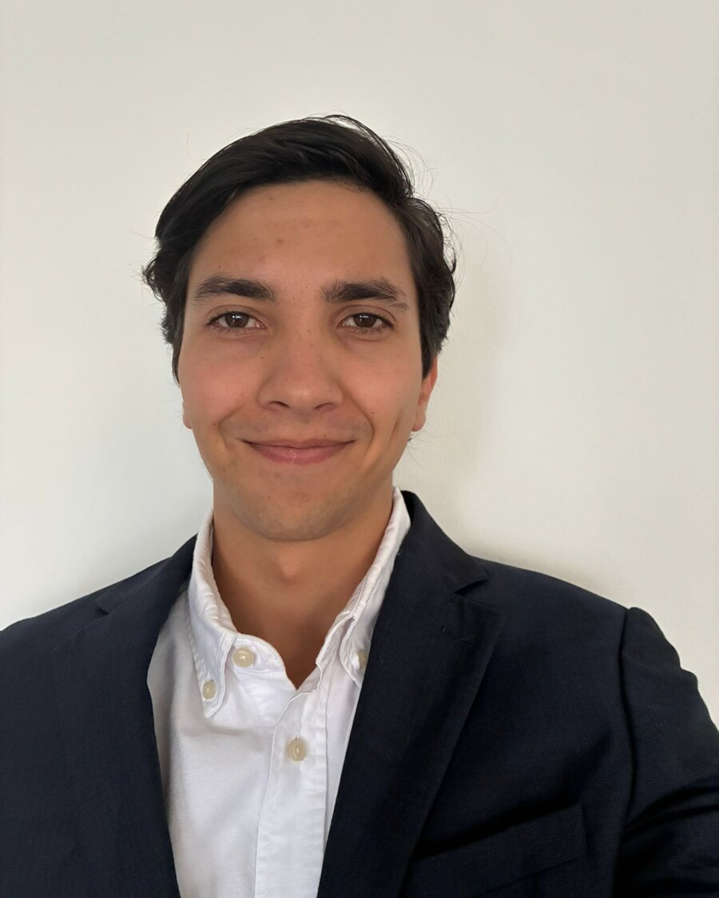

Diseño gráfico · Marketing — Bogotá
Martín Salazar Baraya
Diseño piezas gráficas y contenido para marcas y organizaciones. Hoy, practicante de comunicaciones en The Rockefeller Foundation.
01 — Trabajo seleccionado
Proyectos

02 — Sobre mí
Sobre mí
Soy narrador digital y diseñador. Trabajo entre la comunicación visual y la producción audiovisual, y me gusta construir proyectos con identidad propia: desde el contenido de una marca hasta un podcast o un cortometraje. Estudio Narrativas Digitales y Diseño en la Universidad de los Andes. Además del diseño, llevo varios años liderando grupos de jóvenes, y eso me enseñó a coordinar equipos y a comunicar con claridad.
Experiencia
- Practicante de comunicaciones, oficina para América Latina y el Caribe — The Rockefeller Foundation · 2026
- Community manager y diseñador — Marini Star · 2025
- Diseñador gráfico — Asociación Santa Cruz · 2024–25
Herramientas
- Illustrator · Photoshop · InDesign
- Premiere · Lightroom
- Procreate · Canva
- Shopify · HTML & CSS
Educación e idiomas
- Narrativas Digitales y Diseño — Universidad de los Andes · 2021–presente
- Español nativo
- Inglés B2
- Italiano básico